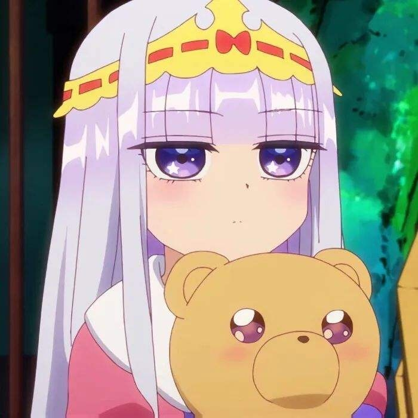
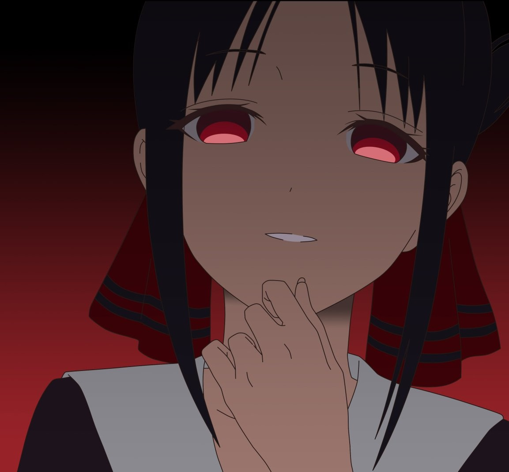
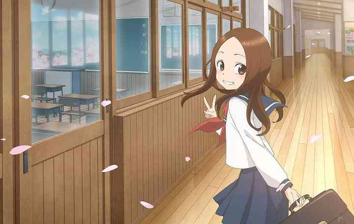

|  |
栖夜公主（スヤリス姫)，聲優：水瀨祈 人類統一國家「凱明國」（カイミーン國）的公主，全名「歐蘿拉·栖夜·莉絲·凱明（オーロラ・栖夜・リース・カイミーン）」。 綽號: 「剪刀魔」、「剪刀幽靈」、「忍者」﹑「雜技團員」﹑「魔王候補」﹑「暗殺者」 願望: 尋求安眠 |
|  |
四宮輝夜（四宮 かぐや／しのみや かぐや Shinomiya Kaguya），聲優：古賀葵 總資產為200兆日圓的大財閥「四宮集團」的大小姐。容貌秀麗，同時是學業優秀，於傳藝、音樂、武術上皆有出色成績的全能型天才。 人格面具: 「輝夜（冰）」、「輝夜（笨蛋）」、「輝夜（幼）」﹑「輝夜醬（小輝夜）」 願望: 想讓白銀御行告白(漫畫-已實現) |
|
相澤梓 / 亞梓莎·埃札瓦（相沢梓（あいざわ あずさ）/アズサ・アイザワ)，聲優：悠木碧 外號「高原的魔女」，外貌是17歲的少女，性格是遠大於外貌年齡的沈穩冷靜，特殊能力為魔女系永久不老不死。前世是日本OL相澤梓，每天都在辛勞工作，最高紀錄連續50天出勤沒有休假，也就是所謂的社畜。苦命的她在27歲時過勞死亡，梅嘉梅加神可憐她的不幸而以現在姿態轉生到異世界。把前世的姓名（相沢 梓（あいざわ あずさ）Aizawa Azusa）倒轉過來，以「亞梓莎·埃劄瓦」（アズサ・アイザワAzusa Aizawa）之名開始新的慢活人生。 特殊能力: 「增加獲得經驗值」 願望: 不老不死的悠閒生活 |
|
|  |
高木（高木），聲優：高橋李依 13歲，本作女主角。是個行為如大人般穩重，在校成績為全校前十，體育方面也表現良好的優等生。平時的嗜好是閱讀漫畫書和散步，也擅長做出爆笑的鬼臉。 興趣: 「捉弄西片」 願望: 與西片結婚 |
|
式守（式守（しきもり），聲優：早見沙織（PV[5]）／大西沙織（動畫）） 平時就像大和撫子一樣溫柔可愛，但在危險關頭時卻會表現出帥氣的一面。和泉說她不可愛的時候會鬧彆扭，前者被同學戲弄時則會反瞪對方，並對他抱著純真的愛意。因憧憬祖父和祖母之間的對話方式，而對和泉用敬語。 興趣: 「壁咚男友」 唯一的缺點: 廚藝 |
|
|
花園百合鈴（花園 ゆりね（はなぞの ゆりね）)，聲優：大森日雅 有點陰暗、喜歡黑魔法與恐怖電影的女大學生，住在神保町的破舊公寓，家中經營神社。有中二病，總是哥德蘿莉風格的打扮並一眼帶著眼罩。 經常在網上購買各種武器和刑具。每次識破小邪神的陰謀或發現邪神犯下錯誤後，都會以血腥殘忍的方式懲罰邪神，但對其他人卻很和藹。 技能: 「腰斬」、「剁成肉醬」、「做成蛇肉刺身」 夢想: 是建立「百合鈴王國」，成為獨裁者，也想過開肉店。 |
圖片有影片連結